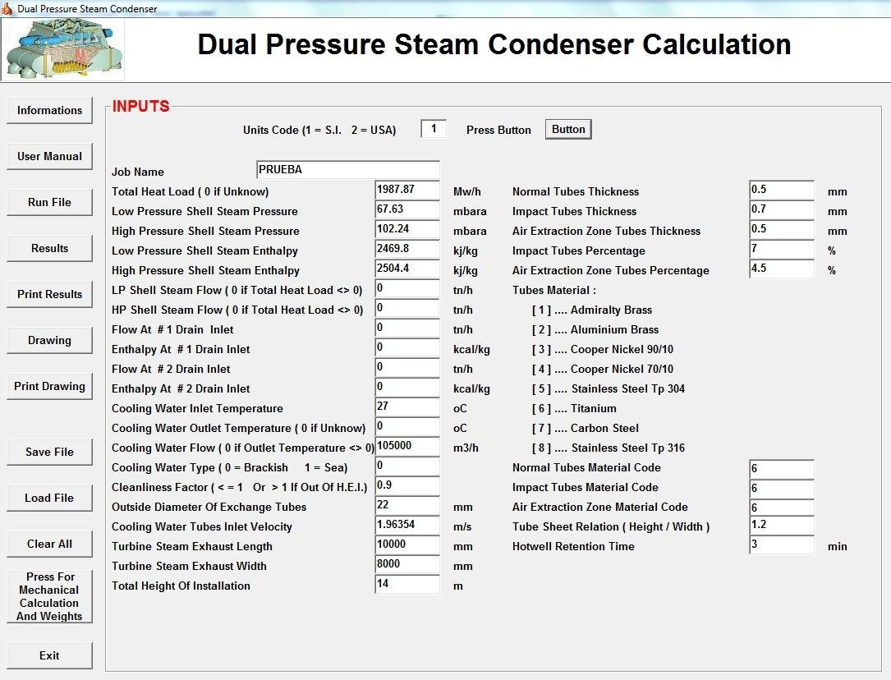
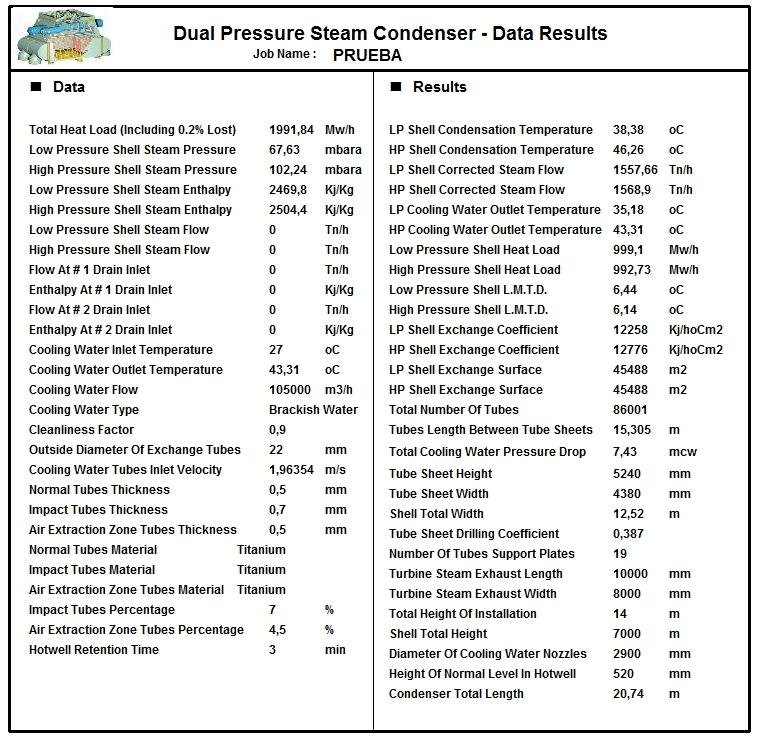
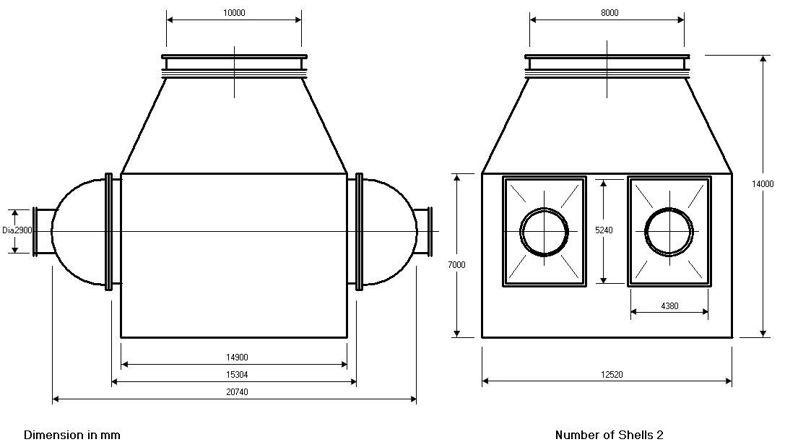
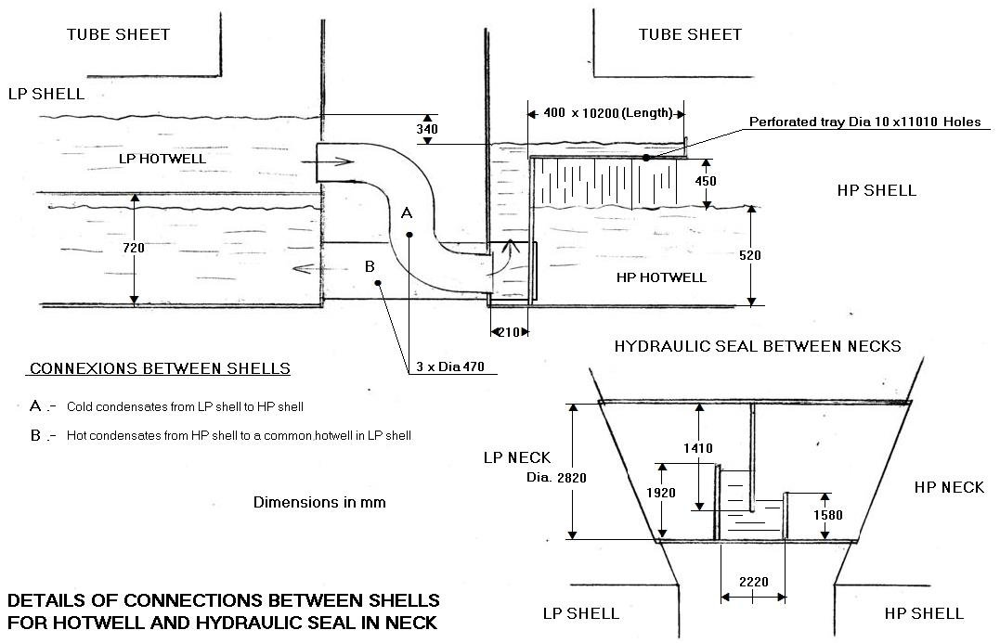
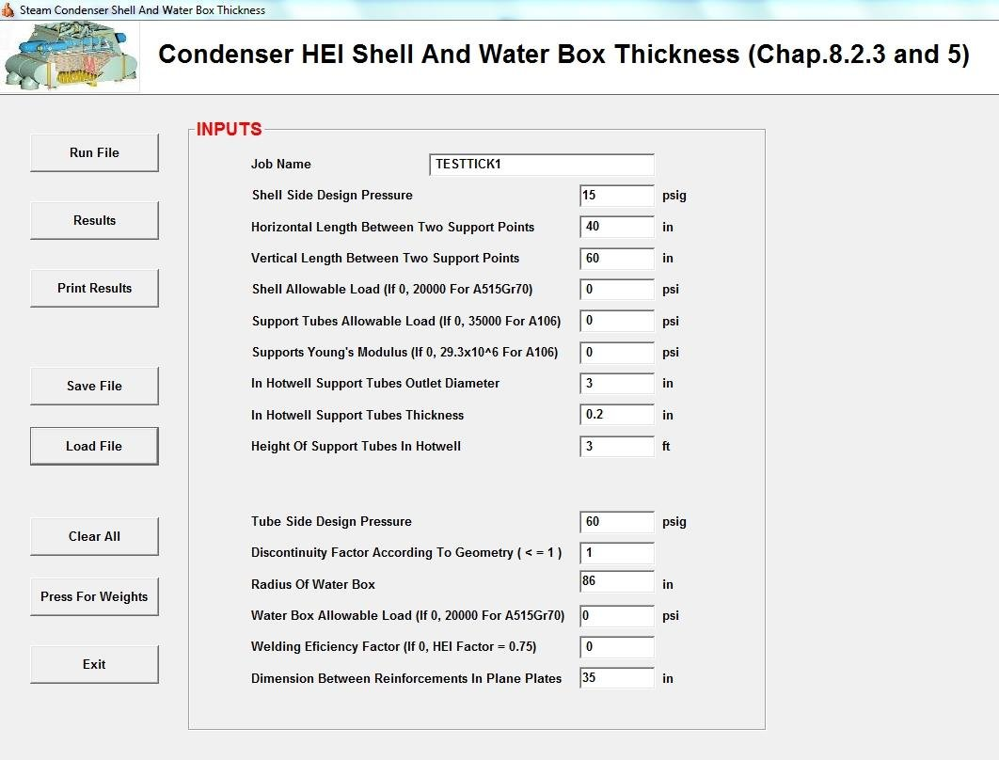
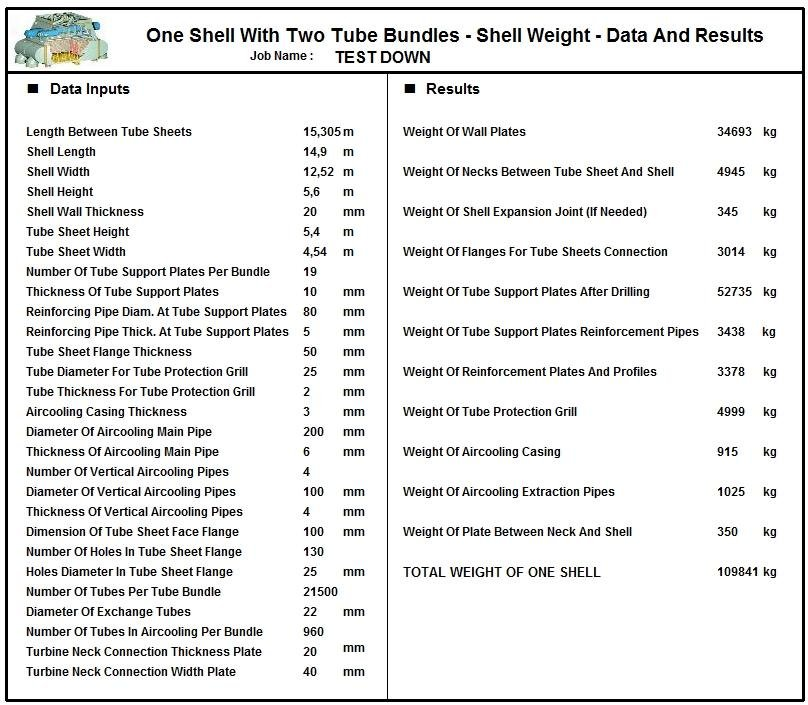

Dual Pressure Condenser Design Software
Design of steam surface condensers with a different turbine pressure in each shell, per HEI standards.
Two shells, two pressures
This program is similar to the Steam Surface Condenser program, but it is applicable to condensers with a different turbine pressure in each shell (low pressure and high pressure shells). Two calculation types are possible: one from the total heat load, the other from the steam flow of each shell. In both cases the calculation is based on a fixed cooling water flow or on the cooling water inlet and outlet temperatures.
The final result is a dual condenser with two identical shells in terms of surface, number and length of tubes, with heat transfer coefficients according to HEI standards. Details of the connection between hotwells and turbine necks are given.
Data entry
The input window collects the total heat load or the steam flow of each shell, the pressure and enthalpy of the low and high pressure shells, drains, cooling water inlet and outlet temperatures, flow, type of water and cleanliness factor, the tube diameter and thicknesses (normal, impact and air extraction zones), tube materials, turbine steam exhaust dimensions and total height of the installation.

Thermal results for each shell
The results give, for each shell, the condensation temperature, corrected steam flow, cooling water outlet temperature, heat load, LMTD, exchange coefficient and exchange surface, together with the total number of tubes, tube length, cooling water pressure drop, tube sheet dimensions, number of support plates, cooling water nozzles, hotwell level and total condenser length.

Drawings and connection details
The program draws the two-shell condenser with its main dimensions, and gives the details of the connections between shells: the pipes between hotwells, which take the cold condensate from the LP shell to the HP shell, and the hydraulic seal between the turbine necks.


Mechanical calculation and weights
The mechanical module calculates the shell and water box thickness according to HEI and the weights of the main parts: tubes and tube sheets, shell, water boxes, hotwells, turbine necks and the interconnections between hotwells and necks, up to the final weights of the condenser.


Documentation
See the complete example with every input and results window in the program documentation:
Dual Pressure Condenser – full documentation (PDF)Related programs
- Steam Surface Condenser – single pressure steam surface condensers per HEI
- Steam Surface Condenser Performance – condenser performance test analysis
- Condenser Revamping – renovation of condenser tube bundles and production gains
Condensers, feedwater heaters, deaerators, district heating, natural gas heaters and more, with a description of each program on the home page.
See all programs →